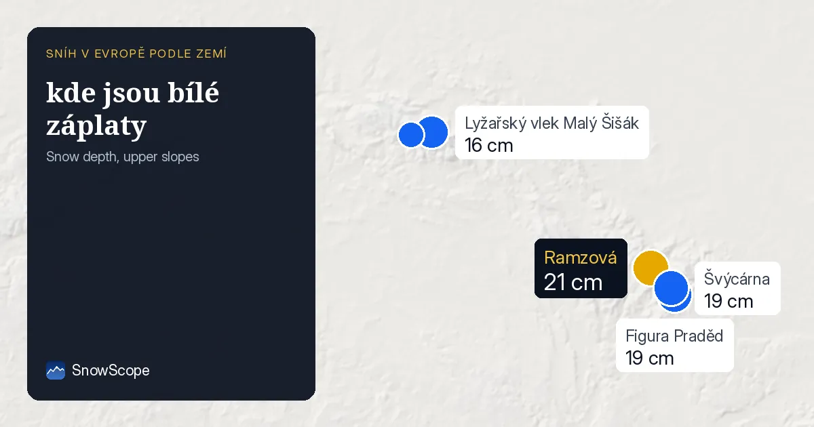

22 českých středisek má sníh nad 1000 m: kde jsou bílé záplaty
Dnes mají sníh na svých horních svazích dvacet dva areálů v celé České republice, z celkových 170 lyžařských areálů v zemi. Většina z nich se nachází nad 1000 m nadmořské výšky, kde náš model ukazuje průměrnou hloubku pouhých 1 cm—tenká pokrývka, která značí samý začátek sezóny.
Podívejte se na předpověď sněhu pro Ramzová v aplikaci SnowScopeVýška sněhu, upozornění a 3D mapa, zdarma.
Kde je sníh právě teď
Sníh na zemi je řídký a rozptýlený. Pouze 250 čtverečních kilometrů českého lyžařského terénu ukazuje dnes nějakou bílou pokrývku, což je výrazný pokles ze včerejších 720 čtverečních kilometrů. Hranice sněhu se nachází na 1300 m nadmořské výšky, což znamená, že nižší údolí a podhůří jsou bez sněhu.
Nejlepší sníh drží hory Jeseníky a Krkonoše. Jeseníky dostaly 9 cm za posledních 72 hodin a Krkonoše měly 8 cm. V těchto vysokých horských masivech se listopadový sníh usazuje nejdříve a vydrží nejdéle. Všech pět sledovaných areálů—Ramzová, Figura Praděd, Švýcárna, Lyžařský vlek Malý Šišák a Skiareál Horní Domky—se nachází v těchto horách nebo v jejich bezprostřední blízkosti.
| Areál | Výška sněhu | Nový sníh, 72 h | Další dny | Vrchol |
|---|---|---|---|---|
| Ramzová | 21 cm | 6 cm | 4 cm | 1 328 m |
| Figura Praděd | 19 cm | 7 cm | 5 cm | 1 441 m |
| Švýcárna | 19 cm | 7 cm | 5 cm | 1 307 m |
| Lyžařský vlek Malý Šišák | 16 cm | 6 cm | 5 cm | 1 153 m |
| Skiareál Horní Domky | 6 cm | 7 cm | 7 cm | 1 308 m |

Která střediska mají nejhlubší sníh
Ramzová vede s 21 cm naměřeným na své stanici, přičemž za poslední tři dny přibylo 6 cm nového sněhu. Figura Praděd a Švýcárna mají obě po 19 cm, s nedávným přibytím 7 cm. Tyto tři areály se nacházejí nad 1300 m nadmořské výšky, kde je vzduch dost studený na to, aby zachoval spadlý sníh.
Níž se nachází Lyžařský vlek Malý Šišák s 16 cm a Skiareál Horní Domky s pouhými 6 cm. Rozdíl odrážuje výšku: každých 100 metrů nadmořské výšky dělá rozdíl pro přežití sněhu v počátku listopadu. Na Skiareálu Horní Domky nízká hloubka ukazuje, jak tenká může být pokrývka na začátku sezóny, i když padl čerstvý sníh.
Hloubka sněhu podle nadmořské výšky
Pod 1000 m nadmořské výšky není žádný sníh. Pás mezi 1000 a 1500 m—kde se nachází většina českých areálů—má v průměru 1 cm sněhu v našem modelovaném území, s pokrytím pouhých 16 procent terénu. Jde o typickou počáteční sezónní situaci: rozptýlené záplaty na severozápadních svazích, holá půda na jihu.
Tyto tenké vrstvy skrývají pod sebou kameny a drsný terén. Lyžaři, kteří zamíří mimo značené sjezdovky, by měli sledovat oficiální lavinový bulletin a být opatrní na jakémkoli neupravovaném svahu.
Co přinese příští týden
Sníh přijde v pulzech. První znatelný pád přichází 20. listopadu a přinese až 3 cm v příštích třech dnech. Dne 23. listopadu—nejsnežnější den příštího týdne—se očekává pád 4 cm. Za sedm dní očekáváme celkem až 7 cm.
Jeseníky a Krkonoše budou pravděpodobně zachytávat více tohoto příchozího sněhu než nižší zóny, čímž prodlouží svou počáteční výhodu. I tak však budou hloubky skromné ve srovnění se standardy středu zimy.
Jak se podmínky změnily za jeden den
Včera mělo 720 čtverečních kilometrů České republiky sněhovou pokrývku. Dnes zůstává bílých pouze 250 čtverečních kilometrů. Ztráta 470 čtverečních kilometrů odráží jak tání v nižších nadmořských výškách—kde teploty přes noc zůstaly nad bodem mrazu—tak vliv větru a slunce na exponované záplaty. Týden zpátky mělo sníh 830 čtverečních kilometrů, takže celkový trend je klesavý, i přesto, že padl nový sníh.
Širší obrázek: Česká republika versus sousedé
Za hranicí na Slovensku je 13 procent lyžařského terénu bílého, ve srovnání s pouhým 1 procenty v České republice. Polsko ukazuje 11 procent pokrytí. Obě země mají vyšší hory a dostaly více sněhu: Ski centrum Dedinky na Slovensku má 42 cm a Karpacz v Polsku drží 44 cm. V příštím týdnu bude Slovensko vidět až 15 cm nového sněhu a Polsko až 13 cm. Zatím se čeští lyžaři hledající hlubší sníh a delší sjezdy mohou podívat na lepší podmínky ve Vysokých Tatrách nebo v podhraničí Tater za hranicí.
Tipy pro lyžaře
- Počítejte s otevřenými sjezdovkami pouze na areálech nad 1300 m nadmořské výšky, zejména na Ramzové, v Figurě Praděd a ve Švýcárně. Naplánujte si návštěvu až po 20. listopadu, kdy se očekává nový sníh.
- Zůstávejte na značených sjezdovkách. Hloubky pod 1000 m jsou nulové; kameny jsou exponované. Lyžování mimo sjezdovky nese skutečné riziko na tenké pokrývce—před opuštěním sjezdovky si prověřte oficiální lavinový bulletin.
- Nižší areály jako Skiareál Horní Domky zůstávají okrajové. Naměřených 6 cm zahrnuje jak starý usedlý sníh, tak nedávný pád; sjezdovky mohou být zavřeny nebo zúženy, jak se den ohřeje.
- Sledujte předpověď pro 23. listopadu. Ten den přinese týdnový nejsilnější sněžení (4 cm). Podmínky se poté výrazně zlepší.
- Máte-li pár dní na cestování, srovnejte se Slovenskem nebo Polskem, kde jsou sněhové hloubky třikrát až čtyřikrát hlubší a předpovědi na příští týden jsou silnější.
About these numbers
Resort snow depths are the deepest snow on the resort's upper slopes from the SnowScope snow model (about 1 km, run of 17. listopadu); they are estimates for an area, not a measurement at one point. Station values are measurements on the date shown. Forecasts can change. Always read the official avalanche bulletin before going off-piste.
Cite this report
For research, teaching or the press: the numbers and charts are free to reuse under CC BY 4.0 with this citation.
SnowScope (2026), 22 českých středisek má sníh nad 1000 m: kde jsou bílé záplaty, https://snowscope.app/blog/cs/2026/11/czechia-snow-report-17-november-2026.html, accessed 2026-11-17
SnowScope (Atlas Labs). (2026, November 17). 22 českých středisek má sníh nad 1000 m: kde jsou bílé záplaty. SnowScope snow reports. https://snowscope.app/blog/cs/2026/11/czechia-snow-report-17-november-2026.html
BibTeX
@misc{snowscope2026czechiasnowreport17novem,
author = {{SnowScope (Atlas Labs)}},
title = {22 českých středisek má sníh nad 1000 m: kde jsou bílé záplaty},
year = {2026},
month = nov,
howpublished = {\url{https://snowscope.app/blog/cs/2026/11/czechia-snow-report-17-november-2026.html}},
note = {Published 2026-11-17 12:32 UTC; accessed 2026-11-17}
}· CC BY 4.0 · Methods, data and tools →
Ramzová: snow and temperature by height, this winter vs last (tools) →
Follow Ramzová
Zdarma: zpráva, když přichází nový sníh, a předpověď každé ráno.